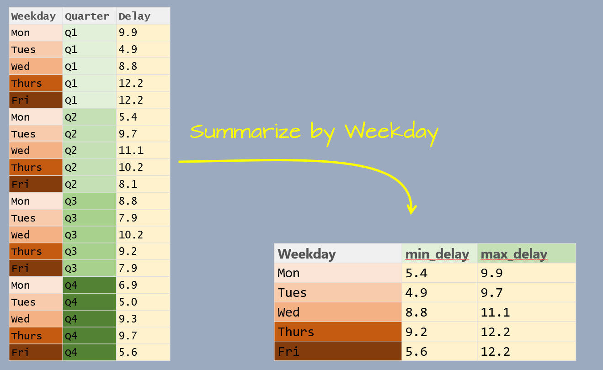
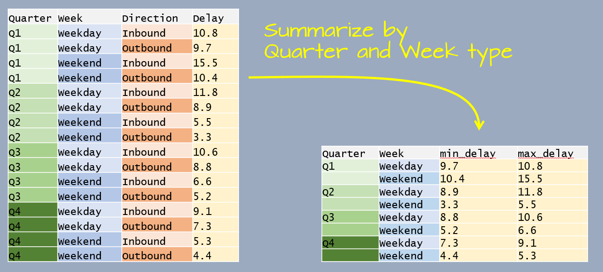
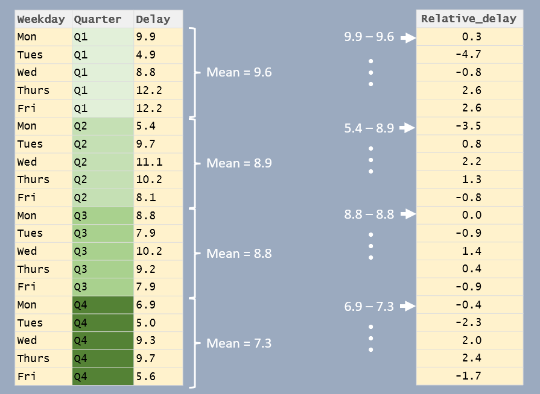
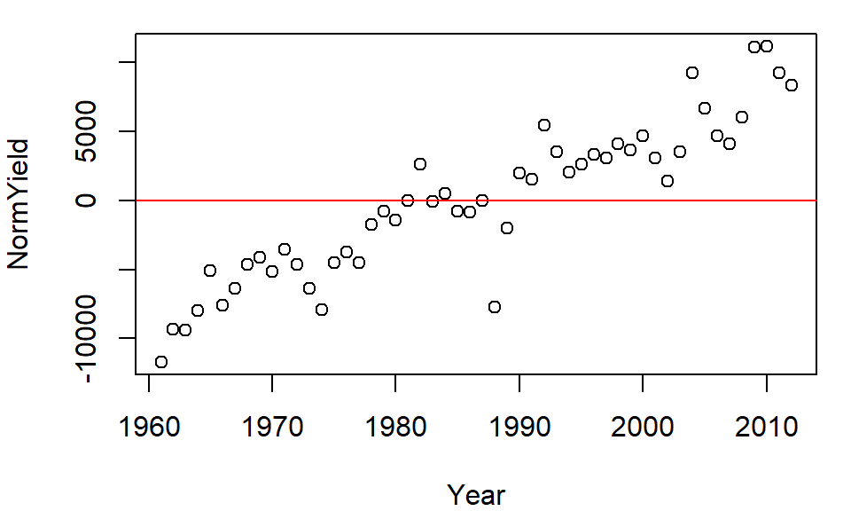

| dplyr |
|---|
| 1.1.4 |
10 Grouping and summarizing
In Chapter 9, you were introduced to the summarise() function, which aggregates an entire column using functions like mean() or sum(). This summarization can also be performed within groups allowing calculations to be done separately for each category of a grouping variable.
10.1 Summarizing data by group
Let’s first create a dataframe listing the average delay time in minutes, by day of the week and by quarter, for Logan airport’s 2014 outbound flights.
df <- data.frame(
Weekday = factor(rep(c("Mon", "Tues", "Wed", "Thurs", "Fri"), times = 4),
levels = c("Mon", "Tues", "Wed", "Thurs", "Fri")),
Quarter = paste0("Q", rep(1:4, each = 5)),
Delay = c(9.9, 4.9, 8.8, 12.2, 12.2, 5.4, 9.7, 11.1, 10.2, 8.1, 8.8, 7.9, 10.2,
9.2, 7.9, 6.9, 5.0, 9.3, 9.7, 5.6))The goal will be to summarize the table by Weekday as shown in the following graphic.

The data table has three variables: Weekday, Quarter and Delay. Delay is the value we will summarize which leaves us with one variable to collapse: Quarter. In doing so, we will compute the Delay statistics for all quarters associated with a unique Weekday value.
This workflow requires two operations: a grouping operation using the group_by function and a summary operation using the summarise/summarize function. Here, we’ll compute two summary statistics: minimum delay time and maximum delay time.
library(dplyr)
df %>%
group_by(Weekday) %>%
summarise(min_delay = min(Delay), max_delay = max(Delay))# A tibble: 5 × 3
Weekday min_delay max_delay
<fct> <dbl> <dbl>
1 Mon 5.4 9.9
2 Tues 4.9 9.7
3 Wed 8.8 11.1
4 Thurs 9.2 12.2
5 Fri 5.6 12.2Note that the weekday follows the chronological order as defined in the Weekday factor.
You’ll also note that the output is a tibble. This data class is discussed at the end of this page.
10.1.1 Grouping by multiple variables
You can group by more than one variable. For example, let’s build another dataframe listing the average delay time in minutes, by quarter, by weekend/weekday and by inbound/outbound status for Logan airport’s 2014 outbound flights.
df2 <- data.frame(
Quarter = paste0("Q", rep(1:4, each = 4)),
Week = rep(c("Weekday", "Weekend"), each=2, times=4),
Direction = rep(c("Inbound", "Outbound"), times=8),
Delay = c(10.8, 9.7, 15.5, 10.4, 11.8, 8.9, 5.5,
3.3, 10.6, 8.8, 6.6, 5.2, 9.1, 7.3, 5.3, 4.4))The goal will be to summarize the delay time by Quarter and by Week type as shown in the following graphic.

This time, the data table has four variables. We are wanting to summarize by Quater and Week which leaves one variable, Direction, that needs to be collapsed.
df2 %>%
group_by(Quarter, Week) %>%
summarise(min_delay = min(Delay), max_delay = max(Delay))# A tibble: 8 × 4
# Groups: Quarter [4]
Quarter Week min_delay max_delay
<chr> <chr> <dbl> <dbl>
1 Q1 Weekday 9.7 10.8
2 Q1 Weekend 10.4 15.5
3 Q2 Weekday 8.9 11.8
4 Q2 Weekend 3.3 5.5
5 Q3 Weekday 8.8 10.6
6 Q3 Weekend 5.2 6.6
7 Q4 Weekday 7.3 9.1
8 Q4 Weekend 4.4 5.3The following section demonstrates other grouping/summarizing operations on a larger dataset.
10.1.2 Functions used in summarise()
The summarise() function typically uses functions that aggregate or extract meaningful summaries from grouped data.
10.1.2.1 Numeric Aggregation Functions
sum(x): Computes the sum of values inx.mean(x): Computes the mean (average) ofx.median(x): Computes the median ofx.min(x): Finds the minimum value inx.max(x): Finds the maximum value inx.sd(x): Computes the standard deviation ofx.var(x): Computes the variance ofx.n(): Counts the number of rows in each group.n_distinct(x): Counts the number of unique values inx.
Note that some of these aggregation functions will return NA if at least one element in the input vector is NA. To have the function ignore the NA values, add the na.rm = TRUE argument. For example:
z <- c(3, NA, 10, 4, 0)
mean(z) # returns NA[1] NAmean(z , na.rm = TRUE) # ignores NA[1] 4.2510.1.2.2 Extracting Single Values from Groups
first(x): Retrieves the first value inx.last(x): Retrieves the last value inx.unique(x): Returns unique values (useful if all values in a group are identical).
10.1.2.3 Boolean and Logical Summaries
any(x): ReturnsTRUEif any value inxisTRUE.all(x): ReturnsTRUEif all values inxareTRUE.
10.1.3 Example
dat <- data.frame(group = c("A", "A", "B", "B", "B"),
x = c(10, 20, 30, 40, 50),
total = c(30, 30, 120, 120, 120),
stat = c(FALSE, FALSE, FALSE, TRUE, FALSE))
# Summarizing data
dat %>%
group_by(group) %>%
summarise(sum_x = sum(x),
total = unique(total), # Could have also used first() or last()
frac = sum_x / total, # Check that sum(x) == total
stat = any(stat))# A tibble: 2 × 5
group sum_x total frac stat
<chr> <dbl> <dbl> <dbl> <lgl>
1 A 30 30 1 FALSE
2 B 120 120 1 TRUE NOTE: In this example, total represents the sum of values within each group, so it should not be summed again. Since the rows are being collapsed, we need to explicitly tell summarise() how to retain a single value for the total column. Using unique(total) ensures we keep the intended group total, assuming it remains consistent within each group. Alternatively, first(total) or last(total) could also be used if the values are identical across rows.
10.2 Other ways to use group_by
The grouping operation does not always need to be followed by a summarization function. The group_by() function can also be used in conjunction with mutate() to perform calculations within each group while preserving the original number of rows.
For example, you might use mutate() after group_by() to create group-relative values, like percentages or rankings within each category, or apply conditional transformations where the operation depends on the group a row belongs to.
In the following example, the delay times are reported as the difference between delay time and the associate quarter’s mean delay time.

df %>%
group_by(Quarter) %>%
mutate(Relative_delay = Delay - mean(Delay))# A tibble: 20 × 4
# Groups: Quarter [4]
Weekday Quarter Delay Relative_delay
<fct> <chr> <dbl> <dbl>
1 Mon Q1 9.9 0.300
2 Tues Q1 4.9 -4.7
3 Wed Q1 8.8 -0.800
4 Thurs Q1 12.2 2.6
5 Fri Q1 12.2 2.6
6 Mon Q2 5.4 -3.5
7 Tues Q2 9.7 0.800
8 Wed Q2 11.1 2.2
9 Thurs Q2 10.2 1.30
10 Fri Q2 8.1 -0.800
11 Mon Q3 8.8 0
12 Tues Q3 7.9 -0.9
13 Wed Q3 10.2 1.40
14 Thurs Q3 9.2 0.400
15 Fri Q3 7.9 -0.9
16 Mon Q4 6.9 -0.400
17 Tues Q4 5 -2.3
18 Wed Q4 9.3 2
19 Thurs Q4 9.7 2.4
20 Fri Q4 5.6 -1.7 10.3 Ungrouping a dataframe in dplyr
When using group_by() in dplyr, the behavior of summarise() depends on the number of grouping variables.
10.3.1 Grouping by a Single Variable
If you group by one variable, summarise() automatically removes the grouping after aggregation. For example:
mtcars %>% group_by(gear) %>% summarise(mpg = mean(mpg))# A tibble: 3 × 2
gear mpg
<dbl> <dbl>
1 3 16.1
2 4 24.5
3 5 21.4In this case, the resulting data frame is ungrouped as summarise() drops the only grouping variable (gear). This is confirmed by the absence of any group in the table header.
10.3.2 Grouping by Multiple Variables
If you group by more than one variable, summarise() only removes the last grouping variable. For example
mtcars %>% group_by(am, gear) %>% summarise(mpg = mean(mpg))# A tibble: 4 × 3
# Groups: am [2]
am gear mpg
<dbl> <dbl> <dbl>
1 0 3 16.1
2 0 4 21.0
3 1 4 26.3
4 1 5 21.4Here, the result remains grouped by am as only gear was removed from the grouping structure. You can confirm this by checking the table header or by using group_vars() on the dataframe.
10.3.3 Grouping and mutate()
Note that this behavior does not apply to mutate(). When using mutate() on a grouped data frame, all grouping variables persist in the output.
mtcars %>% group_by(am, gear) %>% mutate(mpg_scaled = mpg / mean(mpg)) %>% head()# A tibble: 6 × 12
# Groups: am, gear [2]
mpg cyl disp hp drat wt qsec vs am gear carb mpg_scaled
<dbl> <dbl> <dbl> <dbl> <dbl> <dbl> <dbl> <dbl> <dbl> <dbl> <dbl> <dbl>
1 21 6 160 110 3.9 2.62 16.5 0 1 4 4 0.799
2 21 6 160 110 3.9 2.88 17.0 0 1 4 4 0.799
3 22.8 4 108 93 3.85 2.32 18.6 1 1 4 1 0.868
4 21.4 6 258 110 3.08 3.22 19.4 1 0 3 1 1.33
5 18.7 8 360 175 3.15 3.44 17.0 0 0 3 2 1.16
6 18.1 6 225 105 2.76 3.46 20.2 1 0 3 1 1.12 In the output, the first few rows are displayed along with the header information, which confirms that the grouping variables (am and gear) remain intact.
10.3.4 Removing al grouping
To ensure that the table is completely free of any grouping elements, use ungroup:
mtcars %>% group_by(am, gear) %>% summarise(mpg = mean(mpg)) %>% ungroup()# A tibble: 4 × 3
am gear mpg
<dbl> <dbl> <dbl>
1 0 3 16.1
2 0 4 21.0
3 1 4 26.3
4 1 5 21.4Now, the resulting data frame has no remaining grouping structure.
10.4 A working example
The data file FAO_grains_NA.csv will be used in this exercise. This dataset consists of grain yield and harvest year by North American country. The dataset was downloaded from http://faostat3.fao.org/ in June of 2014.
Run the following line to load the FAO data file into your current R session.
dat <- read.csv("http://mgimond.github.io/ES218/Data/FAO_grains_NA.csv", header=TRUE)Make sure to load the dplyr package before proceeding with the following examples.
library(dplyr)10.4.1 Summarizing by crop type
The group_by function will split any operations applied to the dataframe into groups defined by one or more columns. For example, if we wanted to get the minimum and maximum years from the Year column for which crop data are available by crop type, we would type the following:
dat %>%
group_by(Crop) %>%
summarise(yr_min = min(Year), yr_max=max(Year))# A tibble: 11 × 3
Crop yr_min yr_max
<chr> <int> <int>
1 Barley 1961 2012
2 Buckwheat 1961 2012
3 Canary seed 1980 2012
4 Grain, mixed 1961 2012
5 Maize 1961 2012
6 Millet 1961 2012
7 Oats 1961 2012
8 Popcorn 1961 1982
9 Rye 1961 2012
10 Sorghum 1961 2012
11 Triticale 1989 201210.4.2 Count the number of records in each group
In this example, we are identifying the number of records by Crop type. There are two ways this can be accomplished:
dat %>%
filter(Information == "Yield (Hg/Ha)",
Year >= 2005 & Year <=2010,
Country=="United States of America") %>%
group_by(Crop) %>%
count()Or,
dat %>%
filter(Information == "Yield (Hg/Ha)",
Year >= 2005 & Year <=2010,
Country=="United States of America") %>%
group_by(Crop) %>%
summarise(Count = n())# A tibble: 7 × 2
Crop Count
<chr> <int>
1 Barley 6
2 Buckwheat 6
3 Maize 6
4 Millet 6
5 Oats 6
6 Rye 6
7 Sorghum 6The former uses the count() function and the latter uses the summarise() and n() functions.
10.4.3 Summarize by mean yield and year range
Here’s another example where two variables are summarized in a single pipe.
dat.grp <- dat %>%
filter(Information == "Yield (Hg/Ha)",
Year >= 2005 & Year <=2010,
Country=="United States of America") %>%
group_by(Crop) %>%
summarise( Yield = mean(Value), `Number of Years` = max(Year) - min(Year))
dat.grp# A tibble: 7 × 3
Crop Yield `Number of Years`
<chr> <dbl> <int>
1 Barley 35471. 5
2 Buckwheat 10418. 5
3 Maize 96151. 5
4 Millet 16548. 5
5 Oats 22619. 5
6 Rye 17132. 5
7 Sorghum 42258. 510.4.4 Normalizing each value in a group by the group median
In this example, we are subtracting each value in a group by that group’s median. This can be useful in identifying which year yields are higher than or lower than the median yield value within each crop group. We will concern ourselves with US yields only and sort the output by crop type. We’ll save the output dataframe as dat2.
dat2 <- dat %>%
filter(Information == "Yield (Hg/Ha)",
Country == "United States of America") %>%
select(Crop, Year, Value) %>%
group_by(Crop) %>%
mutate(NormYield = Value - median(Value)) %>%
arrange(Crop)Let’s plot the normalized yields by year for Barley and add a 0 line representing the (normalized) central value.
plot( NormYield ~ Year, dat2[dat2$Crop == "Barley",] )
abline(h = 0, col="red")
The relative distribution of points does not change, but the values do (they are re-scaled) allowing us to compare values based on some localized (group) context. This technique will prove very useful later in the course when EDA topics are explored.
10.4.5 dplyr’s output data structure
Some of dplyr’s functions such as group_by/summarise generate a tibble data table. For example, the dat.grp object created in the last chunk of code is associated with a tb_df (a tibble).
class(dat.grp)[1] "tbl_df" "tbl" "data.frame"A tibble table will behave a little differently than a data frame table when printing to a screen or subsetting its elements. In most cases, a tibble rendering of the table will not pose a problem in a workflow, however, this format may prove problematic with some older functions. To remedy this, you can force the dat.grp object to a standalone dataframe as follows:
dat.df <- as.data.frame(dat.grp)
class(dat.df)[1] "data.frame"